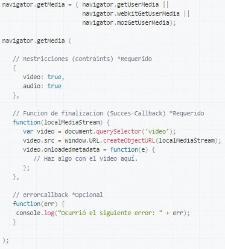

GetUserMedia
It asks the user permission to use a multimedia device such as a camera or microphone. If the user grants this permission, the successCallback is invoked in the called application with a LocalMediaStream object as an argument.
Example:
